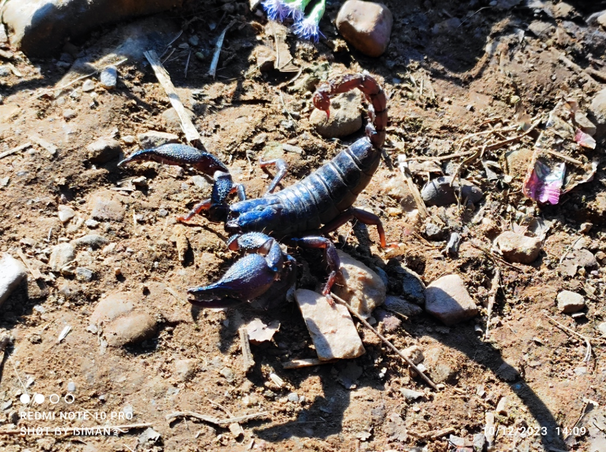
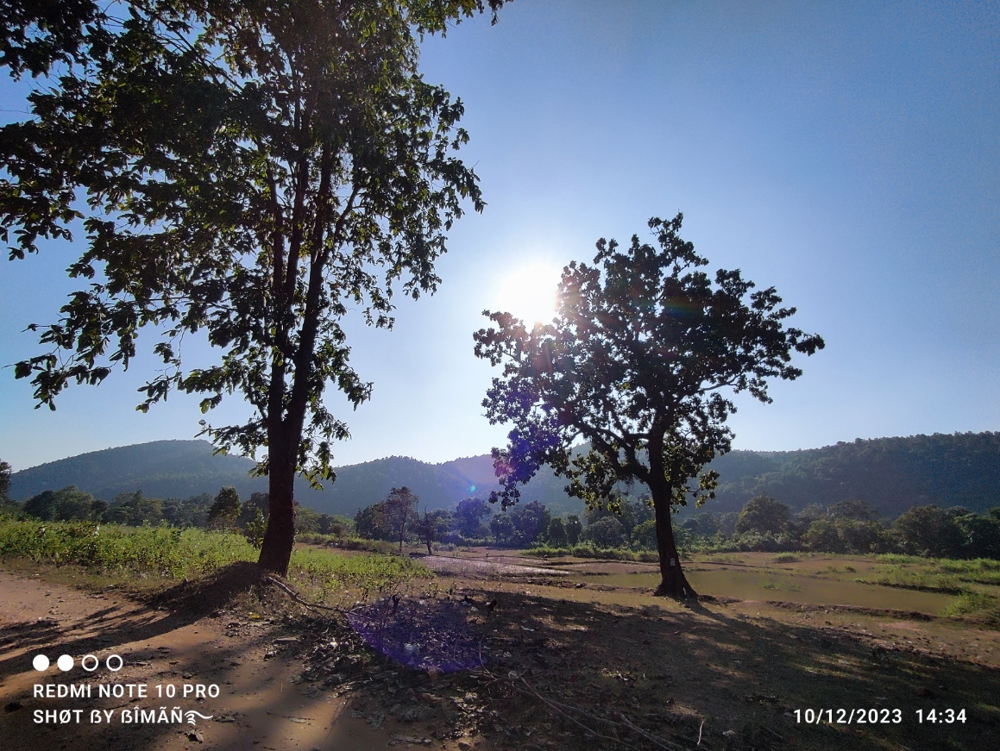
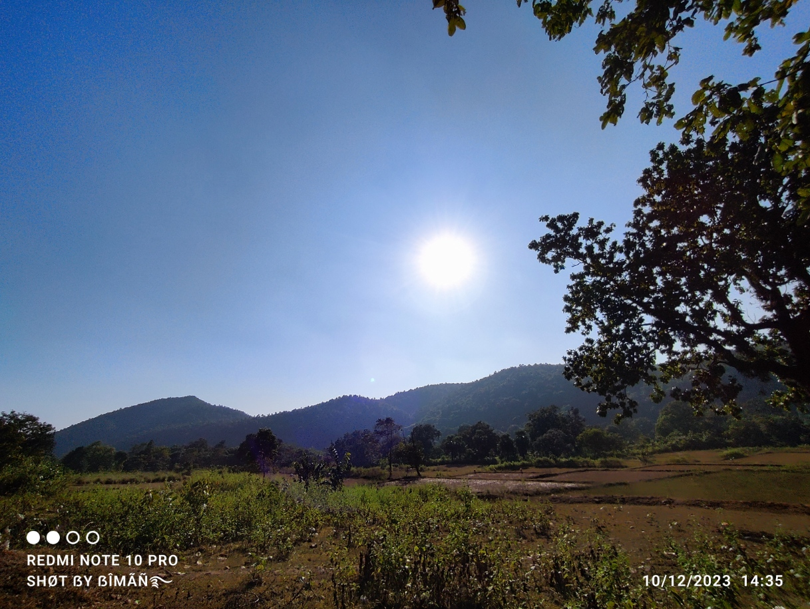
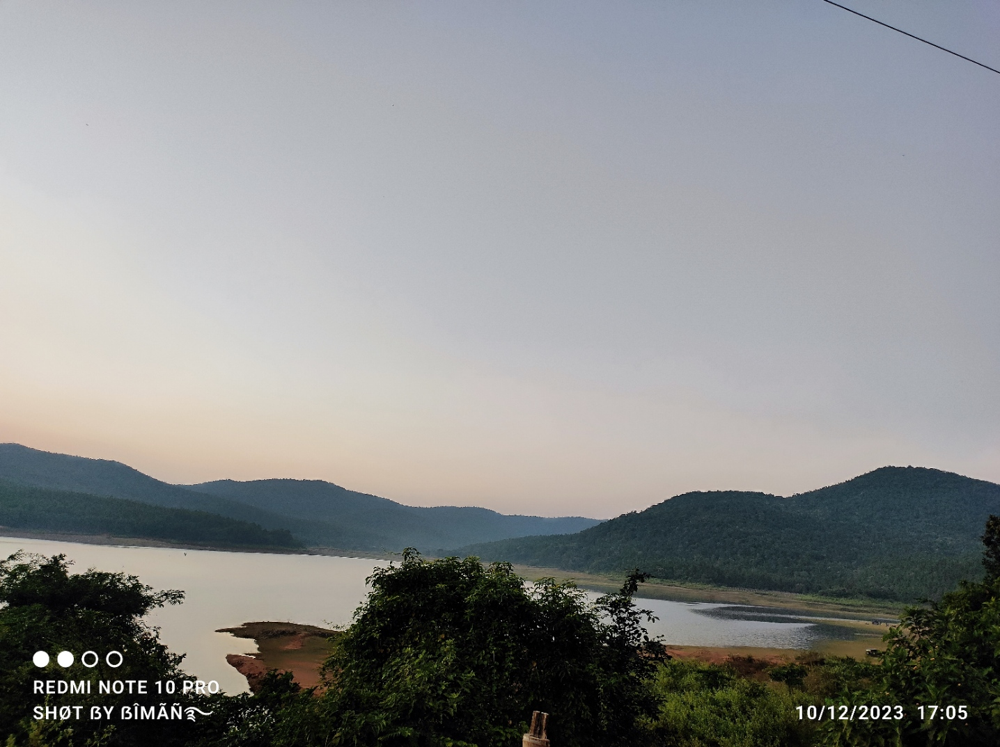

WELCOME TO MY PAGE

Photo 1:A vivid moment in nature’s embrace. The earth’s colors shine under gentle sunlight.It reflects the clam of the Nature.

Photo 12: This flower can reduce the pain and feel the nature vibe.This image highlights vibrant natural patterns. It showcases the harmony and diversity found in wild landscapes.

Photo 11: It show the small orchid.We A peaceful moment that celebrates the wonder of nature.

Photo 10: A close-up of ground textures, stones, and soil. It reveals the subtle beauty in everyday natural elements.

Photo 9: A tranquil outdoor setting, possibly in the afternoon. The image conveys a sense of calm and relaxation in nature.

Photo 8:Morning light shines on the landscape, awakening its beauty. This photo captures the freshness and promise of a new day.

Photo 7: A striking scorpion stands out on the ground. It demonstrates the strength and mystery of wildlife in its habitat.

Photo 6: Earth and stone blend together, creating a harmonious scene. The photo highlights the simplicity and elegance of natural forms.

Photo 5: A detailed look at the ground’s textures and colors. It celebrates the intricate patterns found in nature.

Photo 4:Sun and shadow interact on the earth’s surface. The image captures the dynamic and artistic side of nature.

Photo 3:Warm afternoon light bathes the landscape. It brings out the richness and depth of natural colors.

Photo 2:Evening settles over a peaceful outdoor scene. The photo reflects the enduring beauty of nature at dusk.